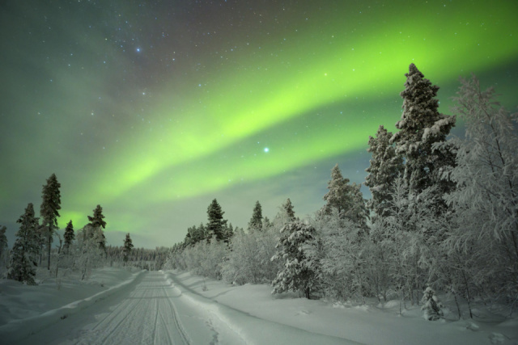

Vissza
Turizmus
- Turisztika
-
2015-ben több mint 4,6 millió turista látogatta meg Finnországot; a legtöbbjük Oroszországból érkezett. 2015-ben a turizmus adta a finnországi GDP mintegy 2,5%-át, és 136 700 munkahelyet biztosított.
-
A sok erdő miatt javasolt a kullancsok által terjesztett agyvelőgyulladás elleni oltás bizonyos területekre utazóknak. Sok turista síszezonban keresi fel Finnországot.
-
Úgy tartják, hogy Santa Claus Finnországban, Korvatunturiban lakik. Rovaniemi városában turistalátványosságként egy Santa Claus-falu található.
- Turisztikai látványosságok
-
- Helsinki
- Valamon kolostora
- Porvoo
- Muumimaailma szórakoztatópark
- Joulupukin Pajakylä (Santa Claus-falu)
- Levi (sícentrum)
